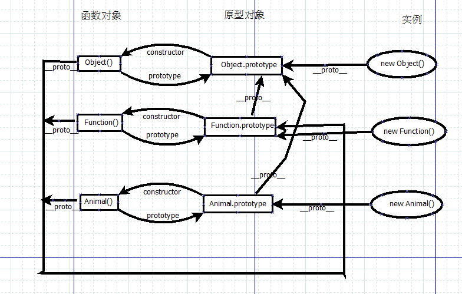
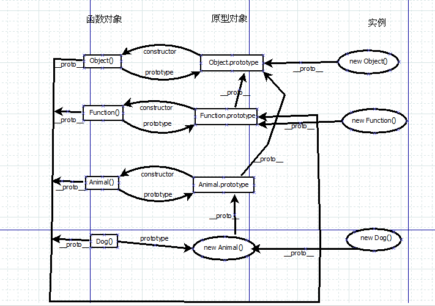

我们将JavaScript对象分为函数对象和普通对象。
函数对象
用function关键字定义的对象或者对其使用typeof运算符返回”function”的对象。
JavaScript引擎内置的函数对象（构造器）
123456typeof Array//"function"typeof Number//"function"typeof Boolean//"function"typeof String//"function"typeof Object//"function"typeof Function//"function"自定义的函数对象
1234function Animal(name){this.name = name;}typeof Animal//"function"
普通对象
除了函数对象之外的其他对象都是普通对象。一般是大括号{}定义的对象或者new关键字返回的对象。
函数对象与普通对象的异同
- 相同点
- 它们都是JavaScript中的的对象
- 它们都有一个默认的proto属性（原型链的关键，后面详细解释）。
- 不同点
- 创建方式不同。函数对象需要用function关键字去定义。而普通对象一般由{}或new关键字来创建。
- 函数对象实际上是对象构造器，可以new一个函数对象返回一个普通对象。
- 对函数对象使用typeof运算符会返回function，而对普通对象使用的话返回object。
- 每一个函数对象都有一个原型对象（prototype）与之关联。，而普通对象没有。
1.对象的prototype属性
原型对象只有函数对象才有，普通对象一般是没有的。且每一个函数对象都有一个原型对象（prototype）与之相关联，一些常用的方法都保存在函数的原型对象中。如Array.prototype中就包含一些数组中常用的concat()、push()…等方法。我们首先需明确，原型对象本身是一个普通对象。
要注意的一点是，函数的原型对象除包含一些对象的公有方法之外，它还包含一个constructor属性，它指向与原型对象相关联的函数对象。
JavaScript引擎内置的函数对象（构造器）
123console.log(Array.prototype);//输出对应的原型对象，包含数组的常用方法。console.log(Array.prototype.constructor===Array);//trueconsole.log(String.prototype.constructor===String);//true自定义的函数对象
12345678function Animal(name){this.name = name;}Animal.prototype.getName = function(){return this.name;}typeof Animal//"function"console.log(Animal.prototype.constructor===Animal);//true
2.对象的proto属性
当我们访问普通对象的属性object.xxx时,如果object自己没有xxx属性,则向上延原型链查找,如果找到,则返回,没找到,则返回undefined。原型链通过什么来实现这种向上查找呢？没错，就是proto属性。
每一个对象都有proto属性，它在对象创建时默认存在，但一般我们都不去使用或者改变它。
函数对象与其proto属性
所有函数(构造器)的proto都指向Function.prototype，它是一个空函数（Empty function）。1234Array.__proto__===Function.prototype//trueNumber.__proto__===Function.prototype//trueString.__proto__===Function.prototype//true...普通对象与其proto属性
普通对象的proto指向函数对象（构造器）的原型对象（prototype）。
JavaScript引擎的内置构造函数生成的对象1234567891011var obj = {name: 'tea'};//相当于new Object(obj)var array = [1,2,3];//相当于new Array(1,2,3)var reg = /hello/g;//相当于new RegExp('hello','g');var date = new Date();var err = new Error('exception');console.log(obj.__proto__ === Object.prototype) // trueconsole.log(array.__proto__ === Array.prototype) // trueconsole.log(reg.__proto__ === RegExp.prototype) // trueconsole.log(date.__proto__ === Date.prototype) // trueconsole.log(err.__proto__ === Error.prototype) // true
自定义构造函数生成的对象
3.原型继承
要想理解JavaScript的继承，必须先区分实例与构造器的区别。首先，实例对象是普通对象，而构造器是函数对象。
Person是构造器，也就是函数对象，它具有Person.prototype原型对象与之对应，它的proto属性值为Function.prototype。而p是实例，它是普通对象且没有原型，它的proto属性值为Person.prototype。
想要实现继承，最简单的方法就是让子类的原型指向父类的实例。
4.原型链
在了解上述各种属性之后，我们来看一个关于原型链的图。

当在对象的域中没有找到我们想要的属性时，js引擎会访问_proto指针指向的对象，并从中寻找要访问的属性，若找到，则返回属性。若没有找到，则继续访问当前proto指向的对象。以此类推，直到访问到Object.prototype.proto指向的对象（空对象）才停止。最后都没找到的话返回undefined。
所以真正形成原型链的是是每个对象的proto__属性，而不是函数的prototype属性
接下来，我们看一下3中继承的例子的原型链是怎样的。

从图中可以知道